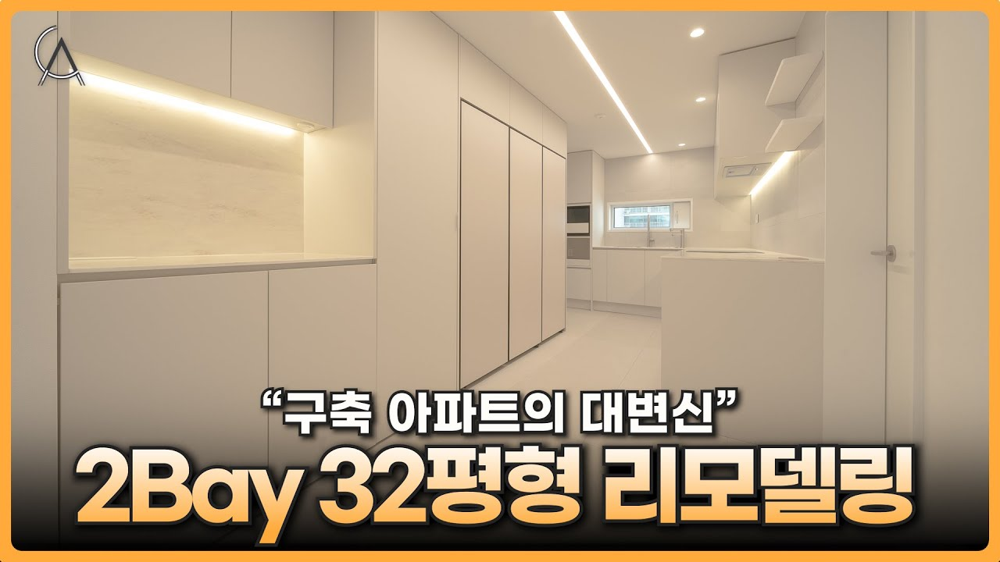
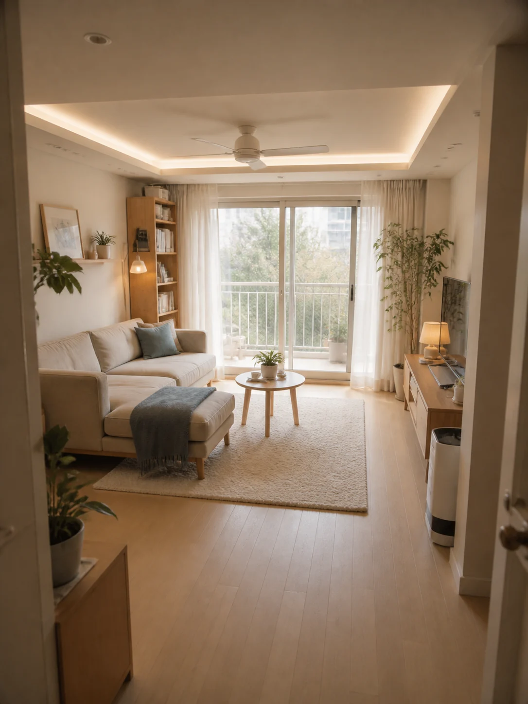
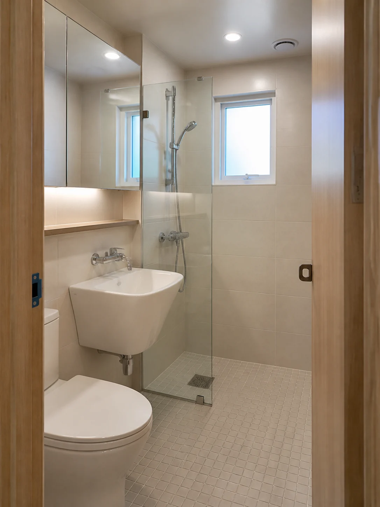
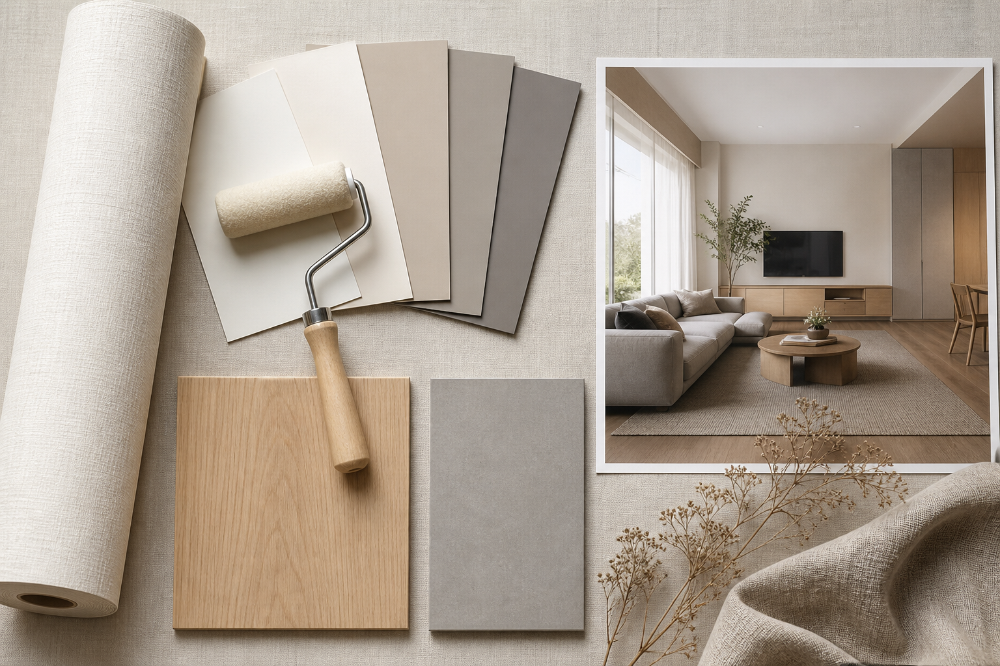

주방과 복도 안쪽이 어둡습니다.
전면 창에서 들어온 빛이 깊은 평면 끝까지 도달하기 어렵습니다. 밝은 마감만 쓰기보다 빛의 통로와 조명 층위를 함께 계획합니다.

01 · SPACE DIAGNOSIS
전면 창에서 들어온 빛이 깊은 평면 끝까지 도달하기 어렵습니다. 밝은 마감만 쓰기보다 빛의 통로와 조명 층위를 함께 계획합니다.
높은 수납장과 벽체가 시선을 막으면 실제보다 좁아 보입니다. 구조를 유지하면서 문선·바닥·천장선을 연결하는 방법부터 검토합니다.
가구 깊이와 손잡이 돌출까지 실측하고, 수납량보다 보행 폭을 먼저 확보해야 합니다.

아래 이미지는 영상 현장의 복제가 아니라 2Bay 공간에 적용할 수 있는 디자인 방향을 보여주는 참고 예시입니다.




05 · BEFORE CONSTRUCTION
이미지를 그대로 따라 하기보다 우리 집의 구조·설비·예산에 적용 가능한 요소만 골라야 합니다.
참고 영상 보기 ↗